오늘 할 일 — 그림에 힘 넣기
지금까지는 "늑대가 집을 분다"처럼 주제만 던져서 그렸어요. 오늘은 그 위에 화풍 · 카메라 · 빛을 쌓아서 책다운 그림으로 만듭니다.
전과 후 — 같은 장면이 어떻게 달라지나
왼쪽은 주제만 던진 그림, 오른쪽은 쌓은 그림. 재생을 누르면 블록이 하나씩 올라가며 바뀝니다.
요약 영상 — 프롬프트 한 줄이 장면이 되기까지 원본 연습실
블록 쌓기 → 뷰 → 앵글 → 샷 → 섞기 → 효과 → 같은 캐릭터 다른 장면. 7장면 한 번에 보기.
7장면
- 프롬프트는 블록 쌓기 그림 프롬프트는 블록을 쌓듯 씁니다. [내 주제] 다음에 뷰, 앵글, 샷, 화풍, 효과, 비율을 차례로 붙여요.
- 뷰 · 어느 방향에서 뷰는 카메라가 어느 방향에서 보느냐입니다. 앞에서 보면 눈이 마주치고, 옆에서 보면 움직임이, 뒤에서 보면 여운이 생겨요.
- 앵글 · 얼마나 높이서 앵글은 카메라 높이입니다. 위에서 내려다보면 작고 귀엽게, 아래에서 올려다보면 크고 당당하게 보여요.
- 샷 · 얼마나 가까이 샷은 화면에 얼마나 담느냐입니다. 멀리서 넓게 담으면 장소가, 가까이 담으면 표정과 감정이 보여요.
- 세 가지를 섞으면 감정 세 축을 한 번에 하나씩 골라 섞으면 장면의 감정이 정해집니다. 아래에서 올려다본 전신은 영웅처럼 당당해 보여요.
- 효과 · 빛과 분위기 효과는 빛과 카메라 연출입니다. 같은 장면도 해 질 녘 금빛을 비추면 따뜻한 마무리 장면이 돼요.
- 같은 캐릭터, 다른 장면 캐릭터는 그대로 두고 카메라와 빛만 바꿔도 전혀 다른 장면이 됩니다. 이제 키워드를 하나씩 바꿔 끼우며 연습해요.
소리 없이 자막으로 설명합니다. 번호를 누르면 그 장면에서 멈춰요. 왼쪽은 촬영장, 오른쪽은 카메라에 찍힌 화면이에요.
오늘 순서
내 책 화풍 한 문장. 오늘 내내, 책 끝까지 같은 문장.
같은 장면을 블록처럼 쌓고, 어디서 찍을지, 어떤 빛인지 골라요.
내 동화(또는 내 이야기) 장면을 완성하고 배경·소품을 따로 만들어요.
매 실습은 똑같은 세 칸이에요
오늘 끝나면 갖게 되는 것
| 결과물 | 어디에 |
|---|---|
| 내 책 화풍 고정 문장 1줄 | 메모장 (화풍문장.txt) |
| 내 동화 또는 내 이야기 장면 3~6장 | 01_장면 |
| 배경 2장 · 소품 2개 · 합치기 1장 | 02_배경 · 03_소품 |
플로우 열기 · 내 동화 고르기
여기서 동화를 고르면 뒤의 모든 탭 문장이 그 동화로 바뀌어요. 한 번만 고르면 됩니다.
플로우 설정 (지난 시간과 같아요)
| 항목 | 오늘 설정 |
|---|---|
| 모델 | 나노바나나 2.1 — 안 보이면 새로고침, 그래도 없으면 Nano Banana Pro |
| 비율 | 세로 3:4 (오늘 내내) |
| 장수 | x1 — 비교할 때 헷갈리지 않게. 마음에 들면 그때 x4 |
| 메타 AI | 써도 됩니다. 단, 비교 실습은 플로우 하나로 (도구가 다르면 비교가 안 돼요) |
내 동화 고르기
고른 동화의 장면 6개
화풍 — 그림의 바탕
화풍은 "무슨 재료로 그렸나"예요. 같은 늑대도 물감이면 번지고, 찰흙이면 그림자가 생기고, 민화면 문양이 생겨요. 책 한 권은 화풍 하나.
왜 문장이 긴가요
AI는 「수채화」 한 단어보다 "물감이 번지고 종이 흰 바탕이 비친다"처럼 눈에 보이는 걸 적어 줘야 제대로 그려요. 외울 필요 없어요. 복사만 하면 됩니다.
1. 화풍 문장은 프롬프트 맨 앞에
2. 「동화책 일러스트」 같은 말은 넣지 않기 (그 말이 화풍을 덮어요)
3. 책 한 권에 화풍 문장 하나, 글자 하나 안 바꾸기
4. 화풍을 바꿔 볼 때는 새 채팅에서
그림으로 보면
근거: 구글 Gemini(나노바나나) 공식 프롬프트 가이드 — 키워드 나열보다 장면을 문장으로, 일러스트는 화풍·팔레트·선·음영을 따로 적기, "없애라" 대신 "있어야 할 것".
영상 — 재료가 바뀌면 그림이 어떻게 달라지나
같은 장면(늑대가 지푸라기 집을 분다)을 재료만 바꿔 봅니다. 왼쪽은 촬영장, 오른쪽은 그 재료로 그린 결과예요.
화풍 7개 — 카드를 누르면 아래 문장이 바뀌어요
새 채팅에서 하나씩: 수채화 → 3D 클레이 → 먹선 만화 → 민화 (재료가 서로 먼 것끼리). 아래 문장은 위 카드에서 고른 화풍으로 바뀌어요.
네 장을 나란히 — 장면은 똑같은데 완전히 다른 책이 됐죠?
서로 멀리 떨어진 화풍 4개로: 물감류 하나(수채화) · 입체류 하나(3D 클레이 또는 페이퍼컷) · 선류 하나(먹선 만화 또는 민화) · 자유 하나. 위 카드에서 고르면 문장이 바뀌어요.
한 단어 → 조합으로
watercolor큰 방향만 정해져요watercolor + thin pencil lines + muted warm colors + simple background재료 + 선 + 색 + 배경화풍 키워드 하나는 출발점이에요. 마음에 드는 화풍을 찾으면 선·색·배경을 더해 내 화풍으로 고정하세요.
화풍 사전 — 38가지 원본 연습실
위 7개는 기본이고, 여기 38가지가 전부예요. 카드마다 사진 2장 · 그림책에 어울리는 쓰임 · 강한 문장 · 연습 프롬프트 복사. 「내 책 화풍」(②)에서 이 38가지도 고를 수 있어요.
화풍 사전 — 38가지
캐릭터를 고르고 카드의 버튼을 누르면 [화풍 강한 문장] + Subject: [캐릭터], aspect ratio 3:4 프롬프트가 복사돼요. 「그림책 일러스트」라는 말은 화풍을 덮어서 뺐어요.
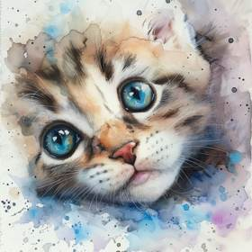

예시: 참고 자료(조남경)
더 보기: Pexels · Unsplash · 위키미디어
수채화watercolor
물에 푼 물감이 번지고 비치는 그림. 맑고 부드러워요.
그림책: 잔잔한 감성, 자연, 잠자리 이야기
주의: 혼자 쓰면 물감이 과하게 번져요. 선·색을 함께 정하세요.


예시: Ivan Bilibin 그림책 삽화(수채·과슈), 퍼블릭 도메인 · Wikimedia Commons
더 보기: Pexels · Unsplash · 위키미디어
과슈gouache
불투명한 수채 물감. 색이 또렷하고 평평해서 빈티지 그림책 느낌이 나요.
그림책: 따뜻한 옛날 그림책 분위기


예시: George Topîrceanu 색연필 고양이(퍼블릭 도메인), 색연필 커피잔 · Wikimedia Commons
더 보기: Pexels · Unsplash · 위키미디어
색연필colored pencil
결이 보이는 부드러운 채색. 손으로 그린 느낌이 강해요.
그림책: 일상, 가족, 따뜻한 이야기


예시: 아이의 크레용 그림(CC BY-SA), 크레용과 그림 · Wikimedia Commons
더 보기: Pexels · Unsplash · 위키미디어
크레용crayon texture
굵고 거친 질감. 아이가 그린 듯 소박해요.
그림책: 유아 그림책, 아이 시점 이야기
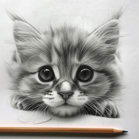

예시: 참고 자료(조남경)
더 보기: Pexels · Unsplash · 위키미디어
연필 그림pencil drawing
흑연 선과 명암으로 그린 스케치 느낌.
그림책: 회상, 옛 기억, 차분한 장면


예시: 참고 자료(조남경)
더 보기: Pexels · Unsplash · 위키미디어
펜 그림pen drawing
가늘고 또렷한 선 위주의 그림.
그림책: 세밀한 배경, 선이 돋보이는 그림책

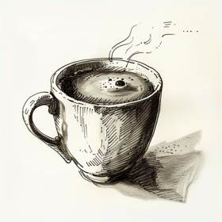
예시: 참고 자료(조남경)
더 보기: Pexels · Unsplash · 위키미디어
잉크화ink drawing
진한 잉크·붓펜으로 그린 강약 있는 선.
그림책: 대비가 강한 장면, 모험

예시: 퍼블릭 도메인 · Wikimedia Commons
더 보기: Pexels · Unsplash · 위키미디어
수묵 담채ink wash
먹의 진하고 옅음에 옅은 색을 살짝 얹은 그림.
그림책: 한국적·동양적 이야기, 전래동화

예시: 퍼블릭 도메인 · Wikimedia Commons
더 보기: Pexels · Unsplash · 위키미디어
민화Korean folk painting (minhwa) style
조선 민간 그림. 평면적이고 익살스러워요.
그림책: 전래동화, 풍자가 있는 이야기

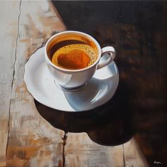
예시: 참고 자료(조남경)
더 보기: Pexels · Unsplash · 위키미디어
유화oil painting
두껍고 진한 붓 터치, 깊은 색감.
그림책: 고전·명작 느낌, 어른 그림책

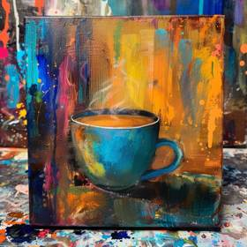
예시: 참고 자료(조남경)
더 보기: Pexels · Unsplash · 위키미디어
아크릴화acrylic paint
선명하고 진한 색, 붓 자국이 보여요.
그림책: 밝고 힘 있는 장면

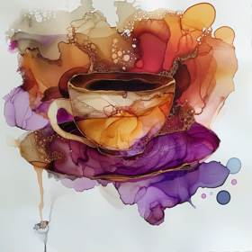
예시: 참고 자료(조남경)
더 보기: Pexels · Unsplash · 위키미디어
알코올 잉크alcohol ink
잉크가 퍼지며 만든 흐르는 무늬. 몽환적이에요.
그림책: 꿈·환상 장면의 배경
.jpg?width=600)
예시: 퍼블릭 도메인 · Wikimedia Commons
더 보기: Pexels · Unsplash · 위키미디어
판화linocut print
판에 새겨 찍은 굵은 선과 면, 2~3가지 색.
그림책: 어른도 읽는 그림책, 민속 이야기


예시: 참고 자료(조남경)
더 보기: Pexels · Unsplash · 위키미디어
한 줄 그림one line art
선 하나를 끊지 않고 이어 그린 그림.
그림책: 미니멀 표지, 감성 페이지
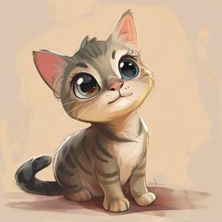
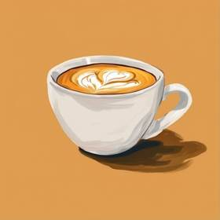
예시: 참고 자료(조남경)
더 보기: Pexels · Unsplash · 위키미디어
카툰cartoon style
과장된 표정과 굵은 선의 만화 그림.
그림책: 유머, 풍자
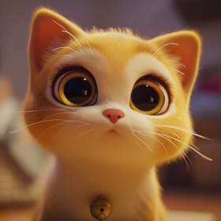
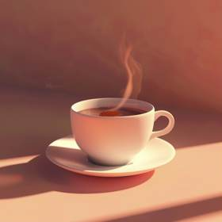
예시: 참고 자료(조남경)
더 보기: Pexels · Unsplash · 위키미디어
애니메이션animation style
애니메이션 한 장면처럼 매끈한 채색과 연출.
그림책: 밝고 움직임 많은 장면
주의: 특정 스튜디오·작품 이름은 넣지 마세요.
예시: 교안 자체 제작 그림
더 보기: Pexels · Unsplash · 위키미디어
플랫 디지털flat digital illustration
그림자 없이 단순한 면과 도형으로 그린 그림.
그림책: 지식 그림책, 깔끔한 현대 느낌
예시: 교안 자체 제작 그림
더 보기: Pexels · Unsplash · 위키미디어
질감 디지털 페인팅textured digital painting
디지털이지만 붓과 종이 질감이 살아 있는 그림.
그림책: 모험, 영화 같은 장면

예시: 앙리 루소(나이브 아트), 퍼블릭 도메인 · 교안 자체 제작 그림
더 보기: Pexels · Unsplash · 위키미디어
나이브naive whimsical style
흔들리는 선, 서툰 듯한 매력, 파스텔 색.
그림책: 요즘 감성, 아이 마음을 담은 이야기
예시: 교안 자체 제작 그림
더 보기: Pexels · Unsplash · 위키미디어
고대비 도형simple bold shapes, high contrast
큰 도형과 흑백·원색의 강한 대비.
그림책: 0~3세 아기 그림책
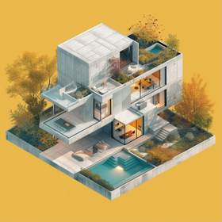
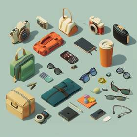
예시: 참고 자료(조남경)
더 보기: Pexels · Unsplash · 위키미디어
아이소메트릭isometric
비스듬히 위에서 본 입체 도면 같은 그림.
그림책: 집·마을 구조, 과학 그림책


예시: 참고 자료(조남경)
더 보기: Pexels · Unsplash · 위키미디어
인포그래픽infographic
정보를 그림과 도표로 정리한 그림.
그림책: 지식 그림책의 설명 페이지
주의: 그림 속 글자가 깨지기 쉬워요. 글자는 편집에서 넣으세요.

예시: 참고 자료(조남경)
더 보기: Pexels · Unsplash · 위키미디어
클립아트clipart
아이콘처럼 단순한 그림, 보통 흰 배경.
그림책: 스티커, 활동지, 등장인물 소개
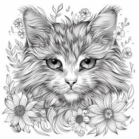
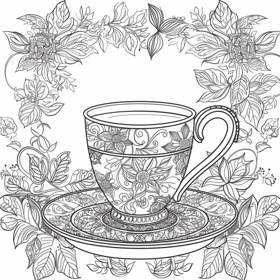
예시: 참고 자료(조남경)
더 보기: Pexels · Unsplash · 위키미디어
컬러링북coloring book page
색 없이 굵은 선만 남긴 선화.
그림책: 색칠북 상품, 활동지
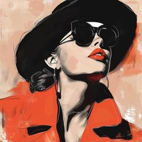

예시: 참고 자료(조남경)
더 보기: Pexels · Unsplash · 위키미디어
패션 일러스트fashion illustration
길쭉한 몸 비율에 옷을 강조한 그림.
그림책: 그림책엔 드물어요. 의상 소개 페이지 정도

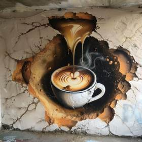
예시: 참고 자료(조남경)
더 보기: Pexels · Unsplash · 위키미디어
그래피티graffiti
거리 벽화처럼 스프레이로 그린 느낌.
그림책: 도시 배경, 개성 강한 이야기
예시: 교안 자체 제작 그림
더 보기: Pexels · Unsplash · 위키미디어
종이 콜라주paper cut collage
색종이를 오려 겹겹이 붙인 그림.
그림책: 촉감 있는 유아 그림책
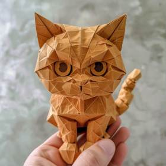

예시: 참고 자료(조남경)
더 보기: Pexels · Unsplash · 위키미디어
종이접기origami
접은 종이로 만든 캐릭터와 세상.
그림책: 종이 나라 이야기
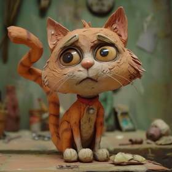

예시: 참고 자료(조남경)
더 보기: Pexels · Unsplash · 위키미디어
클레이메이션claymation
점토 인형으로 만든 듯한 입체 그림.
그림책: 귀엽고 입체적인 이야기
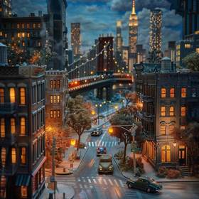
비슷한 예: 클레이메이션·디오라마 — 참고 자료(조남경)
더 보기: Pexels · Unsplash · 위키미디어
클레이 미니어처clay miniature
작은 세트장을 찍은 사진 같은 입체.
그림책: 따뜻한 미니어처 세상

예시: 교안 자체 제작 그림 · 비슷한 예: 아미구루미(참고 자료)
더 보기: Pexels · Unsplash · 위키미디어
펠트·천felt and fabric
바느질한 천 인형 느낌.
그림책: 포근한 유아 그림책
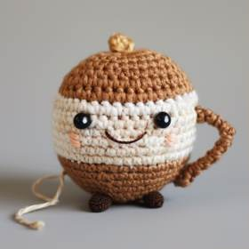
예시: 참고 자료(조남경)
더 보기: Pexels · Unsplash · 위키미디어
아미구루미amigurumi
코바늘로 뜬 털실 인형.
그림책: 포근하고 귀여운 캐릭터


참고: 기법 목록 일부는 오빠두엑셀 LIVE 166회 「자판기 키워드」(조남경)를 참고해 설명을 새로 썼어요.
번역 바로잡기
| 키워드 | 참고 자료 표기 | 바른 뜻 |
|---|---|---|
| Knolling | 롤링 | 놀링 — 물건을 가지런히 펼쳐 놓고 위에서 찍기 |
| Silhouette | 그림자 | 실루엣 — 윤곽만 어둡게 |
| bokeh | 산란효과 | 보케 — 배경 흐림과 빛망울 |
| Graffiti | 낙서 | 그래피티 — 거리 벽화 |
화풍 맞추기 — 장면에 어울리는 바탕
화풍은 취향만이 아니라 이야기 분위기와 맞아야 해요. 늑대가 집을 부는 장면을 크레파스로 그리면 무섭지 않고, 벽돌 집 저녁 식탁을 먹선 만화로 그리면 포근하지 않아요.
궁합표 (★ 잘 맞음 · ○ 괜찮음 · △ 어색할 수 있음)
| 장면 분위기 | 수채화 | 크레파스 | 3D 클레이 | 페이퍼컷 | 먹선 만화 | 민화 | 연필 스케치 |
|---|---|---|---|---|---|---|---|
| 밝고 신남 | ○ | ★ | ★ | ○ | ★ | ○ | △ |
| 잔잔·따뜻 | ★ | ○ | ○ | ★ | △ | ○ | ★ |
| 슬픔·외로움 | ★ | △ | ○ | ★ | △ | △ | ★ |
| 긴장·위험 | ○ | ○ | ○ | ★ | ★ | ★ | ○ |
| 잔치·기쁨 | ○ | ★ | ★ | ○ | ○ | ★ | △ |
| 신비·하늘 | ★ | △ | ○ | ★ | △ | ★ | ○ |
내용과 화풍 매칭 — 10가지 이야기 종류 원본 연습실
이야기 종류별 추천 화풍과 참고 그림(퍼블릭 도메인 명화). 내 동화가 어느 종류인지 찾아보세요.
잔잔한 감성, 잠자리 이야기watercolor, soft gouache

뽑아 보기 프롬프트
뽑아 보기 · [내 장면]만 바꿔 쓰기
영어 (화풍 문장 + 장면)
한글로 보기
유머, 풍자cartoon style, flat digital illustration
_bottom_half.jpeg?width=600)
뽑아 보기 프롬프트
뽑아 보기 · [내 장면]만 바꿔 쓰기
영어 (화풍 문장 + 장면)
한글로 보기
전래동화, 한국적인 이야기Korean folk painting (minhwa) style, ink wash
이 호랑이는 일부러 우스꽝스럽게 그려서 양반을 풍자한 거예요. 풍자 + 한국적 이야기에 딱이에요.
뽑아 보기 프롬프트
뽑아 보기 · [내 장면]만 바꿔 쓰기
영어 (화풍 문장 + 장면)
한글로 보기
따뜻한 일상, 가족colored pencil, crayon texture
뽑아 보기 프롬프트
뽑아 보기 · [내 장면]만 바꿔 쓰기
영어 (화풍 문장 + 장면)
한글로 보기
촉감·공예 느낌paper cut collage, felt and fabric, clay miniature
뽑아 보기 프롬프트
뽑아 보기 · [내 장면]만 바꿔 쓰기
영어 (화풍 문장 + 장면)
한글로 보기
모험, 활동textured digital painting, cinematic composition
아래 프롬프트로 직접 뽑아 채워 보세요.
뽑아 보기 프롬프트
뽑아 보기 · [내 장면]만 바꿔 쓰기
영어 (화풍 문장 + 장면)
한글로 보기
과학·지식 그림책isometric, clean flat infographic
뽑아 보기 프롬프트
뽑아 보기 · [내 장면]만 바꿔 쓰기
영어 (화풍 문장 + 장면)
한글로 보기
아기 그림책simple bold shapes, high contrast
뽑아 보기 프롬프트
뽑아 보기 · [내 장면]만 바꿔 쓰기
영어 (화풍 문장 + 장면)
한글로 보기
어른도 읽는 그림책linocut print, muted palette
뽑아 보기 프롬프트
뽑아 보기 · [내 장면]만 바꿔 쓰기
영어 (화풍 문장 + 장면)
한글로 보기
요즘 느낌naive whimsical style (wobbly lines, pastel)
뽑아 보기 프롬프트
뽑아 보기 · [내 장면]만 바꿔 쓰기
영어 (화풍 문장 + 장면)
한글로 보기
규칙
화풍 이름은 일반 용어만
작가 이름은 프롬프트에 넣지 않아요. 옛 그림은 "이런 느낌" 참고용이고, 그 그림을 그대로 따라 그리게 하지 않아요.
한 걸음 더
내 이야기에 맞는 화풍 두 개를 골라 같은 장면을 두 번 뽑고, 어느 쪽이 이야기와 더 맞는지 이유를 적어 보세요.
아기돼지 장면 5(벽돌 집 앞, 지친 늑대)와 장면 3(지푸라기 집이 날아감)을 둘 다 크레파스로. 어느 쪽이 어색한가요?
→ 무서운 장면은 크레파스가 가벼워요. 같은 책이라면 둘 다 괜찮은 화풍(수채화·페이퍼컷·민화)을 골라야 해요.
실제 그림책 화가들이 이렇게 그렸어요. 버튼을 누르면 예시 그림과 프롬프트가 나와요. 해 보세요. 고른 콤비는 책 끝까지 같은 문장으로 씁니다.
영상 — 색 재료에 선 재료를 얹으면
같은 장면에 색 재료만 → 선 재료를 하나씩 얹어 봅니다. 콤비 다섯 개가 어떻게 다른지 보세요.
쌓기 원리
프롬프트는 블록처럼 쌓아요. 지금까지는 가운데 한 칸만 썼고, 오늘은 아래와 위를 붙입니다.
블록 순서 (아래부터 위로)
예) "글자 없음" 대신 "글자나 간판이 없는 깨끗한 화면". AI는 있어야 할 것을 적어 줄 때 더 잘 따라요.
영상 — 블록을 하나씩 쌓으면
주제만 → +화풍 → +카메라 → +빛. 블록이 하나 늘 때마다 그림이 어떻게 달라지는지, 그리고 순서를 바꾸면 왜 약해지는지.
프롬프트는 이 순서로 써요 · 자판기처럼 생각하기 원본 연습실
프롬프트는 이 순서로 써요
- 주제 — 누가·무엇이 (내 캐릭터)
- 뷰·앵글 — 어디서 보나 (front view, low angle…) → ④ 조합에서 섞는 법
- 샷 — 얼마나 담나 (full shot…)
- 화풍 — 무엇으로 그렸나 (watercolor…)
- 효과 — 빛·카메라 (golden hour…, 필요할 때만)
- 비율 — 판형 (aspect ratio 3:4)
앞에 올수록 AI가 더 중요하게 봐요. 쉼표로 이어 붙이면 돼요.
자판기처럼 생각하기
버튼(키워드)만 바꾸면 결과가 바뀌어요. 주제까지 같이 바꾸면 무엇 때문에 바뀌었는지 알 수 없어요. 이걸 변인 통제라고 해요.
아기돼지 장면 3을 블록 하나씩 더하며 네 장. 순서대로 놓으면 힘이 들어가는 게 보여요. (위 영상이 이 네 장이에요)
두 장을 나란히 — 빠진 블록이 그림에서 어떻게 사라졌나요?
어디서 찍나 (뷰·앵글·샷)
카메라를 든 사람이 되어 보세요. 어느 쪽에서 · 얼마나 높이서 · 얼마나 가까이 세 가지만 정하면 돼요.
카메라가 움직이면 그림이 어떻게 바뀌나
뷰·앵글 자세히 — 어디서 보느냐 원본 연습실
방향(앞·옆·뒤)과 높이(위·눈높이·아래)를 3D로 먼저 보고, 필요하면 아래를 펼쳐 사진과 연습 카드를 보세요.
설명 영상 — 방향과 높이, 3D로 보기
- 촬영장과 찍힌 화면 왼쪽은 촬영장을 밖에서 본 모습, 오른쪽은 카메라에 실제로 찍힌 화면입니다. 청록 선이 카메라가 보는 범위예요.
- front view · 앞에서 정면에서 보면 캐릭터와 독자의 눈이 마주칩니다. 등장인물 소개, 말을 거는 장면에 써요.
- side view · 옆에서 옆에서 보면 걷거나 달리는 방향이 잘 보입니다. 이동하는 장면, 두 인물이 마주 보는 장면에 좋아요.
- rear view · 뒤에서 뒤에서 보면 얼굴 대신 뒷모습이 남습니다. 떠나는 장면, 무언가를 바라보는 장면에 여운을 줘요.
- eye level · 눈높이 이번엔 높이입니다. 캐릭터 눈높이에서 찍으면 친구처럼 대등하게 보여요. 높이를 쓰지 않으면 대개 눈높이로 나옵니다.
- high angle · 위에서 위에서 비스듬히 내려다보면 캐릭터가 작고 약해 보입니다. 외로움, 귀여움을 보여 줄 때 써요.
- low angle · 아래에서 아래에서 올려다보면 크고 당당해 보입니다. 용기를 내는 순간, 결심한 장면에 어울려요.
- bird eye view · 새처럼 높이서 새처럼 아주 높이서 내려다보면 마을과 길이 지도처럼 보입니다. 이야기의 시작, 장소 소개에 좋아요.
- top view · 바로 위에서 바로 위에서 수직으로 내려다봅니다. 식탁, 책상, 지도처럼 바닥에 펼친 것을 보여 줄 때 써요.
- drone view · 드론 높이 드론 높이에서 넓은 풍경 속 작은 주인공을 담습니다. 여정의 크기, 넓은 세상을 보여 줘요.
- bottom view · 바로 아래에서 바로 아래에서 위를 봅니다. 하늘, 나무 꼭대기를 올려다보는 장면에 써요. 굵게 표시한 다섯 개가 그림책 단골입니다.
펼쳐 보기 — 고양이 사진 10장 · 키워드별 실제 사진 · 한눈에 보기 · 키워드 10 · 연습 카드 6
실제 예시 — 같은 고양이, 다른 뷰
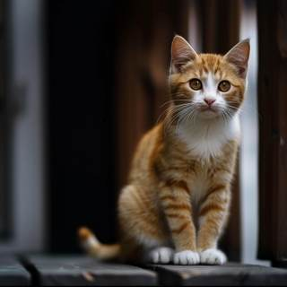
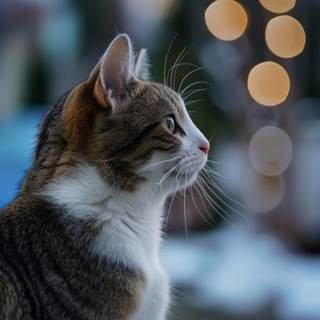
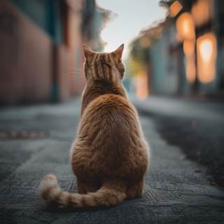
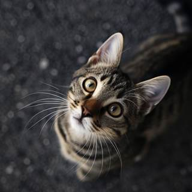

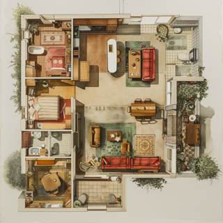


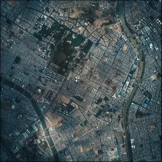
예시: 참고 자료(조남경) — 같은 고양이로 뷰만 바꾼 10장
실제 사진 더 보기 — 키워드별
실제 사진 더 보기
새 창에서 열립니다. 비슷한 예시를 보여 주는 참고용이며, 저작권은 각 사이트의 작가에게 있습니다.
한눈에 보기
뷰는 어느 방향에서 보느냐, 앵글은 얼마나 높은 곳에서 보느냐예요.
키워드 10개
| 키워드 | 뜻 | 그림책에서 이런 장면에 |
|---|---|---|
| front view | 앞에서 | 독자와 눈을 맞춤, 말 거는 장면 |
| side view | 옆에서 | 걷기·달리기, 이동하는 장면 |
| rear view | 뒤에서 | 떠나는 장면, 뒷모습의 여운 |
| high angle | 위에서 비스듬히 | 작고 약해 보임, 외로움·귀여움 |
| low angle | 아래에서 올려다봄 | 크고 당당해 보임, 결의·위압감 |
| bird eye view | 새처럼 높이서 | 마을 전체, 이야기 시작 |
| top view | 바로 위에서 | 식탁·책상·지도 위 |
| bottom view | 바로 아래에서 | 하늘·나무 꼭대기 올려보기 |
| drone view | 드론 높이 | 넓은 풍경 속 작은 주인공 |
| satellite view | 위성 | 지도 느낌, 그림책엔 드묾 |
굵은 다섯 개가 그림책 단골이에요.
직접 연습 — 키워드를 바꿔 끼우며 비교해요
드롭다운에서 키워드를 고르면 프롬프트가 바로 바뀌어요. 같은 캐릭터로 두세 개를 뽑아 나란히 비교해 보세요.
사람 ①사람 혼자
영어
한글로 보기
사람 ②사람 혼자
영어
한글로 보기
동물 ①동물 혼자
영어
한글로 보기
동물 ②동물 혼자
영어
한글로 보기
장면 ①장면 연출
영어
한글로 보기
장면 ②장면 연출
영어
한글로 보기
한 걸음 더
감정 실험
장면 ①을 high angle과 low angle로 한 장씩 뽑아 보세요. 같은 장면인데 어느 쪽이 더 신나 보이나요? 이유를 한 줄로 적어 보세요.
그림으로 보는 8가지
| 그림 | 고르기 | 프롬프트에 들어가는 말 | 느낌 |
|---|---|---|---|
| 눈높이에서 | 눈높이에서 본 | 평범, 같이 있는 느낌 | |
| 위에서 내려다 | 높은 곳에서 내려다본 | 작고 귀엽게, 외롭게 | |
| 아래서 올려다 | 낮은 곳에서 올려다본 | 크고 당당하게, 무섭게 | |
| 뒤에서 | 뒤에서 본 뒷모습 | 떠남, 바라봄 | |
| 얼굴만 | 얼굴이 화면 가득한 클로즈업 | 감정 | |
| 허리 위 | 허리 위까지 보이는 | 대화, 행동 | |
| 전신 | 머리부터 발끝까지 전신이 보이는 | 자세, 옷 | |
| 멀리 전체 | 멀리서 전체 풍경과 함께 작게 보이는 | 장소, 여정, 행렬 |
두 번째는 돼지가 작고 위태롭고, 세 번째는 늑대가 크고 무섭죠. 같은 장면이에요.
샷(프레이밍) 자세히 — 얼마나 담느냐 원본 연습실
화면 틀이 다가가는 영상을 먼저 보고, 필요하면 펼쳐 보세요.
설명 영상 — 화면 틀이 다가가요
- 화면 틀이 다가가요 샷은 카메라가 얼마나 가까이 가느냐입니다. 청록 화면 틀이 작아질수록 담기는 범위가 줄어요.
- long shot · 넓게 전신에 넓은 배경까지 담습니다. 장소를 소개하거나 긴 여정을 보여 줄 때 써요.
- full shot · 전신 머리부터 발끝까지 전신. 행동이 보이고 캐릭터 시트에도 씁니다. 발이 잘리면 "feet visible"을 함께 적어요.
- medium full shot · 무릎 위 무릎 위까지. 몸짓과 손동작이 잘 보입니다.
- medium shot · 허리 위 허리 위까지. 두 인물의 대화, 관계를 보여 주는 장면에 가장 많이 씁니다.
- medium close up · 가슴 위 가슴 위까지. 마음을 털어놓는 장면, 대화의 시작에 어울려요.
- close up · 얼굴 얼굴만 크게. 감정이 가장 중요한 장면에 씁니다. 두 인물을 다 담고 싶으면 medium shot부터 쓰세요.
- extreme close up · 눈·입 눈이나 입만 아주 가깝게. 놀람, 비밀, 결정적 순간에 짧게 씁니다.
펼쳐 보기 — 같은 사람 다른 샷 사진 · 장면에 맞는 샷 · 잘 안 될 때 · 연습 카드 6
실제 예시 — 같은 사람, 다른 샷
예시: 참고 자료(조남경)의 전신 사진 한 장을 샷 단계별로 잘라 보여 줘요.

예시: 참고 자료(조남경) — close up / medium shot 사진
실제 사진 더 보기 — 샷별
실제 사진 더 보기
새 창에서 열립니다. 비슷한 예시를 보여 주는 참고용이며, 저작권은 각 사이트의 작가에게 있습니다.
한눈에 보기
Full shot = full body = full length, 다 같은 말이에요. 배경까지 넓게 담으면 long shot이에요.
장면에 맞는 샷
| 샷 | 담는 범위 | 그림책에서 이런 장면에 |
|---|---|---|
| extreme close up | 눈·입 | 놀람, 비밀, 결정적 순간 |
| close up | 얼굴 | 감정이 중요한 장면 |
| medium close up | 가슴 위 | 대화의 시작, 마음을 털어놓는 장면 |
| medium shot | 허리 위 | 대화·관계 장면 |
| medium full shot | 무릎 위 | 몸짓이 보이는 장면 |
| full shot | 전신 | 행동, 캐릭터 시트 |
| long shot | 전신 + 넓은 배경 | 장소 소개, 여정 |
잘 안 될 때
발까지 안 나와요
"full body"만 쓰면 발이 잘릴 때가 있어요. "full shot, feet visible, standing"처럼 몸 부위를 같이 적으면 잘 지켜져요.
얼굴이 너무 작아요
장면 연출에서 close up을 쓰면 두 캐릭터 중 한 명만 나올 수 있어요. 둘 다 담고 싶으면 medium shot부터 쓰세요.
직접 연습 — 샷을 바꿔 끼우며 비교해요
같은 캐릭터로 close up, medium shot, full shot을 한 장씩 뽑아 세 장을 나란히 놓아 보세요.
사람 ①사람 혼자
영어
한글로 보기
사람 ②사람 혼자
영어
한글로 보기
동물 ①동물 혼자
영어
한글로 보기
동물 ②동물 혼자
영어
한글로 보기
장면 ①장면 연출
영어
한글로 보기
장면 ②장면 연출
영어
한글로 보기
뷰 × 앵글 × 샷 섞기 — 조합 원본 연습실
세 가지를 섞으면 감정이 생겨요. 영상을 보고, 펼쳐서 「골라서 바로 보기」와 「단골 조합 8가지」를 써 보세요.
설명 영상 — 섞으면 감정이 생겨요
- 세 축은 서로 다른 방향 뷰는 방향, 앵글은 높이, 샷은 거리입니다. 서로 다른 축이라 한 축에서 하나씩 골라 섞어요.
- high angle + close up 위에서 내려다본 얼굴은 귀엽고 보살펴 주고 싶은 느낌. 안기려는 강아지, 아기 얼굴 장면에 써요.
- eye level + medium shot 눈높이의 허리 위 장면은 대화와 일상. 식탁에서 이야기하는 장면처럼 편안해요.
- low angle + full shot 아래에서 올려다본 전신은 영웅처럼 크고 당당합니다. 산꼭대기에 선 주인공, 용기를 낸 순간에 써요.
- rear view + long shot 뒤에서 넓게 담으면 떠나는 뒷모습과 여운이 남습니다. 이별, 새로운 길을 떠나는 장면에 어울려요.
- bird eye view + long shot 높이서 넓게 보면 주인공이 작아 보입니다. 마을 소개, 길을 잃은 장면에 써요.
- 충돌 피하기 같은 축에서 둘을 고르면 충돌입니다. front view와 rear view, close up과 full shot을 함께 쓰지 않아요. bird eye view에는 high angle을 또 쓰지 않습니다.
- 쓰는 순서 [내 주제], 뷰, 앵글, 샷, 화풍, 효과, aspect ratio 3:4. 이 순서로 쉼표로 이어 쓰면 됩니다.
펼쳐 보기 — 궁합표 · 3×3 감정표 · 골라서 바로 보기 · 단골 조합 8 · 조합 실습
세 축은 서로 다른 방향이에요
방향 · 높이 · 거리는 서로 다른 축이라 한 축에서 하나씩 고르면 돼요. 같은 축에서 둘을 고르면(front view + rear view, close up + full shot) 충돌이에요.
쓰는 순서
[내 주제], 뷰, 앵글, 샷, 화풍, 효과, aspect ratio 3:4 — 뷰 → 앵글 → 샷 순서로, 쉼표로 이어요. 앵글은 눈높이면 eye level이라고 쓰거나 비워 둬도 돼요.
충돌 피하기 — 궁합표
○ 잘 어울려요 · △ 되지만 드물어요 · ✕ 모순이에요. bird eye view · top view · drone view · bottom view는 높이가 뷰 안에 들어 있어서 high angle · low angle을 또 쓰지 않아요.
| 뷰·앵글 ＼ 샷 | extreme close up | close up | medium close up | medium shot | medium full shot | full shot | long shot |
|---|---|---|---|---|---|---|---|
| front view | ○ | ○ | ○ | ○ | ○ | ○ | ○ |
| side view | ○ | ○ | ○ | ○ | ○ | ○ | ○ |
| rear view | ✕ | △ | ○ | ○ | ○ | ○ | ○ |
| high angle | △ | ○ | ○ | ○ | ○ | ○ | ○ |
| low angle | △ | ○ | ○ | ○ | ○ | ○ | ○ |
| bird eye view | ✕ | ✕ | ✕ | △ | ○ | ○ | ○ |
| top view | ✕ | ✕ | ✕ | △ | ○ | ○ | ○ |
| drone view | ✕ | ✕ | ✕ | ✕ | △ | ○ | ○ |
| bottom view | ✕ | ✕ | △ | ○ | ○ | ○ | ○ |
- rear view — 뒤통수 클로즈업은 감정이 안 보여요
- bird eye view — 높이서 넓게 보는 뷰라 얼굴 가까이와 모순
- top view — 바로 위에서 얼굴 가까이는 정수리뿐
- drone view — 드론 높이는 멀리서 보는 뷰
- bottom view — 바로 아래서 얼굴 가까이는 턱뿐
- △는 되긴 하지만 드문 연출이에요. 이유가 있을 때만 쓰세요.
조합마다 감정이 달라요 — 3 × 3
앵글(세로) × 샷(가로)만 바꿔도 아홉 가지 느낌이 나와요. 뷰는 여기에 「독자와 눈 맞춤(앞) · 움직임(옆) · 여운(뒤)」을 얹어요.
high angle + close up
귀여움 · 보살핌
내려다보이는 아기 얼굴, 안기려는 강아지
high angle + medium shot
풀 죽음 · 수줍음
혼나는 아이, 고개 숙인 모습
high angle + full shot
외로움 · 작음
길 잃은 아이, 텅 빈 운동장
eye level + close up
고백 · 눈 맞춤
비밀을 말하는 순간, 첫 만남
eye level + medium shot
대화 · 일상
식탁에서 이야기, 친구와 나란히
eye level + full shot
행동 · 소개
등장인물 소개, 걷고 뛰는 장면
low angle + close up
위압 · 결의
화난 어른, 결심한 눈
low angle + medium shot
당당함
용기 낸 아이, 가슴 편 주인공
low angle + full shot
영웅 · 거대함
거인, 산꼭대기에 선 주인공
그림은 구도를 보여 주는 도식이에요. 정답이 아니라 방향입니다.
조합 체험 — 골라서 바로 보기
세 개를 고르면 구도 미리보기 · 느낌 · 어울리는 장면 · 프롬프트가 같이 바뀌어요. 충돌이 나면 빨간 안내가 떠요.
느낌 · 감정
어울리는 장면
프롬프트
그림책 단골 조합 8가지
장면 → 느낌 → 조합 순서로 외워 두면 장면 처방이 빨라져요. 내 주제 한 줄 아래에 붙여 넣으세요.
등장인물 소개
책 첫머리, 주인공이 독자에게 인사하는 장면
느낌 · 감정: 친근함 · 소개
내 주제 아래에 붙여 넣기
한글로 보기
비밀을 털어놓는 순간
할아버지가 손녀에게 속삭이는 장면
느낌 · 감정: 친밀함 · 집중
내 주제 아래에 붙여 넣기
한글로 보기
용기를 내는 순간
주인공이 커다란 개 앞에 서는 장면
느낌 · 감정: 당당함 · 결의
내 주제 아래에 붙여 넣기
한글로 보기
혼자라는 걸 깨닫는 순간
길 잃은 아이가 텅 빈 공원에 서 있는 장면
느낌 · 감정: 외로움 · 작음
내 주제 아래에 붙여 넣기
한글로 보기
떠나는 뒷모습
친구가 멀어져 가는 장면
느낌 · 감정: 여운 · 그리움
내 주제 아래에 붙여 넣기
한글로 보기
결정적 발견
어두운 숲에서 눈이 커지는 순간
느낌 · 감정: 놀람 · 긴장
내 주제 아래에 붙여 넣기
한글로 보기
마을 소개
이야기의 무대를 처음 보여 주는 장면
느낌 · 감정: 설렘 · 시작
내 주제 아래에 붙여 넣기
한글로 보기
내려다보는 귀여움
강아지가 올려다보며 꼬리 흔드는 장면
느낌 · 감정: 귀여움 · 보살핌
내 주제 아래에 붙여 넣기
한글로 보기
콤비네이션 실습 — 캐릭터 6명으로 섞어 보기
뷰 · 앵글 · 샷을 하나씩 바꿔 가며 같은 캐릭터를 세 장 뽑아 나란히 놓아 보세요. 충돌 조합을 고르면 안내가 떠요.
사람 ①사람 혼자
영어
한글로 보기
사람 ②사람 혼자
영어
한글로 보기
동물 ①동물 혼자
영어
한글로 보기
동물 ②동물 혼자
영어
한글로 보기
장면 ①장면 연출
영어
한글로 보기
장면 ②장면 연출
영어
한글로 보기
잘 안 될 때
- 앵글이 안 먹혀요 → 뷰에 높이가 들어 있지 않은지 보세요(bird eye · top · drone). 그땐 앵글을 비워요.
- 얼굴이 안 보여요 → rear view + close up이면 뒤통수만 나와요. medium shot 이상으로.
- 발이 잘려요 → low angle + full shot엔
feet visible을 붙이세요. - 너무 멀어요 → long shot은 배경이 주인공이에요. 인물을 보여 주려면 full shot.
한 걸음 더 — 감정 곡선 세 장
같은 캐릭터로 high angle + long shot → eye level + medium shot → low angle + full shot 세 장을 뽑아 순서대로 놓아 보세요. 조합만 바꿨는데 「외로움 → 대화 → 용기」로 이야기가 생겨요. 각 장면에 한 줄 글을 붙여 보세요.
책 한 권이 전부 같은 거리면 지루해요. 장면마다 거리를 골라 보세요. 같은 거리가 3장 연달아 오면 알려 드려요.
빛 — 분위기
같은 그림도 아침 햇살이면 시작 같고, 노을이면 끝 같고, 달빛이면 비밀 같아요. 빛 한 줄이 이야기 순서를 만들어요.
빛 고르기 — 그림으로
| 그림 | 고르기 | 프롬프트에 들어가는 말 | 느낌 |
|---|---|---|---|
| 아침 햇살 | 맑은 아침 햇살이 옆에서 비추는 | 시작, 희망 | |
| 한낮 | 밝은 한낮의 고른 빛 | 평범, 활기 | |
| 오후 노을 | 주황빛 노을이 길게 그림자를 만드는 | 끝, 따뜻한 마무리 | |
| 밤·달빛 | 푸른 달빛과 짙은 그림자 | 고요, 외로움, 비밀, 무서움 | |
| 흐림·비 | 회색 흐린 하늘의 부드러운 빛 | 슬픔, 기다림 | |
| 창가 불빛 | 창문에서 새어 나오는 따뜻한 불빛 | 집, 안도 |
효과 자세히 — 빛·카메라·연출 원본 연습실
빛만 바꿔 보는 영상을 보고, 효과 사전은 펼쳐서 골라 쓰세요.
설명 영상 — 빛만 바꿔 보기
- 화풍과 효과는 달라요 화풍은 무엇으로 그리느냐(수채화, 색연필), 효과는 빛과 카메라 연출입니다. 캐릭터와 카메라는 그대로 두고 빛만 바꿔 볼게요.
- soft natural light 창으로 들어오는 은은한 빛. 대부분의 그림책 장면에 기본으로 씁니다.
- backlight · 역광 캐릭터 뒤에서 비추는 빛. 윤곽이 빛나고 앞은 살짝 어두워집니다. 감동적인 순간, 첫 만남에 어울려요.
- dramatic shadows · 강한 그림자 옆에서 강하게 비추고 주변을 어둡게 하면 긴장감이 생깁니다. 무서운 장면, 위기 장면에 써요.
- golden hour · 금빛 해 질 녘의 낮고 따뜻한 빛. 하루의 마무리, 귀갓길, 따뜻한 결말에 어울려요.
- silhouette · 실루엣 밝은 하늘을 등지고 서면 윤곽만 어둡게 남습니다. 노을 속 이별, 여운이 남는 장면에 써요.
- 밤 · 차가운 빛 푸른 달빛처럼 차갑고 어두운 빛은 밤 장면을 만듭니다. 효과는 화풍과 함께 써야 그림책다워요. 예) watercolor, golden hour lighting
펼쳐 보기 — 화풍과 효과는 달라요 · 효과 사전 13가지(사진) · 한 걸음 더
화풍과 효과는 달라요
화풍
- 무엇으로 그렸나
- 수채화, 색연필, 클레이…
- 책 한 권 내내 고정
효과
- 빛·카메라가 어떤가
- 역광, 보케, 실루엣…
- 장면마다 바꿔도 됨
예) [캐릭터], watercolor, golden hour lighting — 화풍은 수채화로 고정하고, 마지막 장면에만 골든 아워를 얹어요.
효과 사전 — 13가지
효과는 화풍과 같이 써야 그림책다워요. 버튼을 누르면 [캐릭터], watercolor, [효과], 그림책 일러스트, aspect ratio 3:4가 복사돼요.

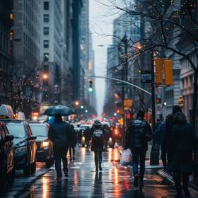
예시: 참고 자료(조남경)
더 보기: Pexels · Unsplash · 위키미디어
보케bokeh
배경을 흐리게 하고 빛을 동그란 빛망울로.
그림책: 주인공 강조, 밤의 불빛
참고 자료

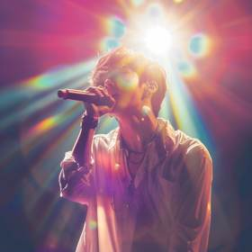
예시: 참고 자료(조남경)
더 보기: Pexels · Unsplash · 위키미디어
렌즈 플레어lens flare
강한 빛이 렌즈에 반사돼 생긴 빛줄기.
그림책: 해 뜨는 희망 장면 (그림책에선 약하게)
참고 자료

예시: 참고 자료(조남경)
더 보기: Pexels · Unsplash · 위키미디어
실루엣silhouette
빛을 등지고 윤곽만 어둡게.
그림책: 노을 속 이별, 여운이 남는 장면
참고 자료
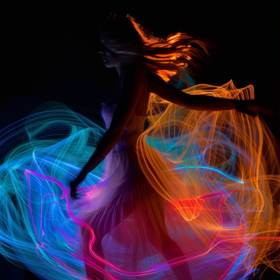

예시: 참고 자료(조남경)
더 보기: Pexels · Unsplash · 위키미디어
빛 그림light painting
빛이 지나간 궤적을 선으로.
그림책: 마법, 별똥별, 반딧불
참고 자료


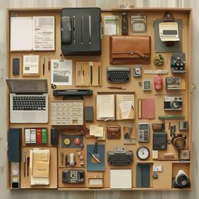

예시: 참고 자료(조남경)
더 보기: Pexels · Unsplash · 위키미디어
놀링knolling
물건을 가지런히 펼쳐 놓고 위에서.
그림책: 가방 속 준비물, 소개 페이지
참고 자료
예시: 교안 자체 제작 그림
더 보기: Pexels · Unsplash · 위키미디어
골든 아워golden hour lighting
해 질 녘의 따뜻한 금빛.
그림책: 따뜻한 마무리, 귀갓길
추가


한 걸음 더
같은 장면, 다른 빛
장면 ①을 soft natural light, golden hour lighting, dramatic shadows로 세 번 뽑아 보세요. 빛만 바꿨는데 이야기의 분위기가 어떻게 달라지나요?
같은 갈림길인데 — 아침은 출발, 노을은 집 생각, 달빛은 곧 무슨 일이 생길 것 같죠.
장면 처방 — 다 쌓기
화풍 + 장면 + 카메라 + 빛을 한 번에 합쳐요. 오늘의 핵심. 내 동화든 내 이야기든, 여기서 만든 그림이 책에 들어가요.
영상 — 장면의 감정에서 거꾸로 처방하기
장면을 읽고 → 앵글 → 샷 → 화풍 → 빛을 차례로 처방합니다. 아래 「처방 맞히기」를 하기 전에 한 번 보세요.
처방 맞히기 — 동화 장면 5개 원본 연습실 방식
장면을 읽고 앵글·샷·화풍·효과를 고른 뒤 「처방 보기」. 모범 처방과 몇 개가 같은지 알려 줘요. 다른 선택도 이유가 있으면 괜찮아요.
장면 1아기돼지 삼형제
“늑대가 볼을 부풀려 첫째 돼지의 지푸라기 집을 날려 버리는 장면”
모범 처방: low angle · full shot · cartoon style · dramatic shadows
아래에서 올려다보면 늑대가 크고 무섭게 보여요. 전신으로 담아 부는 몸짓과 날리는 지푸라기가 다 보이고, 굵은 선 만화풍이 움직임에 힘을 줘요. 강한 그림자가 위기감을 만들어요.
다른 선택도 이유가 있으면 괜찮아요. 모범안과 다르게 고른 이유를 한 줄 적어 보세요.
장면 2해와 달이 된 오누이
“나무 꼭대기의 오누이가 밑에서 기어오르는 호랑이를 내려다보는 장면”
모범 처방: high angle · long shot · Korean folk painting (minhwa) style · dramatic shadows
위에서 내려다보면 높은 나무와 아찔한 거리가 함께 보여 오누이가 얼마나 위태로운지 느껴져요. 민화의 평평한 색과 호랑이 문양이 전래동화 느낌을, 강한 그림자가 밤의 긴장을 만들어요.
다른 선택도 이유가 있으면 괜찮아요. 모범안과 다르게 고른 이유를 한 줄 적어 보세요.
장면 3흥부와 놀부
“쪼개진 박에서 쌀과 보물이 쏟아져 나와 깜짝 놀라는 흥부 가족”
모범 처방: front view · medium shot · crayon texture · golden hour lighting
정면 허리 위로 담으면 놀란 얼굴과 쏟아지는 보물이 한 화면에 들어와요. 크레파스의 진한 원색이 신나는 기분을, 금빛이 복과 따뜻함을 더해요.
다른 선택도 이유가 있으면 괜찮아요. 모범안과 다르게 고른 이유를 한 줄 적어 보세요.
장면 4피리 부는 사나이
“피리 소리를 따라 쥐 떼가 골목에서 줄지어 쏟아져 나오는 장면”
모범 처방: bird eye view · long shot · paper cut collage · soft natural light
새처럼 높이서 보면 줄지은 행렬의 길이가 지도처럼 보여요. 종이를 오려 겹친 층이 중세 마을 골목을 무대처럼 만들고, 은은한 빛이 동화 같은 분위기를 지켜요.
다른 선택도 이유가 있으면 괜찮아요. 모범안과 다르게 고른 이유를 한 줄 적어 보세요.
장면 5해와 달이 된 오누이
“하늘에서 내려온 동아줄을 잡고 올라가는 오누이”
모범 처방: low angle · full shot · watercolor · backlight
아래에서 올려다보면 하늘로 오르는 느낌이 커지고, 전신으로 매달린 몸짓이 보여요. 수채화의 번짐이 하늘과 구름을 부드럽게, 역광이 희망의 순간을 빛나게 해요.
다른 선택도 이유가 있으면 괜찮아요. 모범안과 다르게 고른 이유를 한 줄 적어 보세요.
조립기
완성 프롬프트
나란히 놓아 보세요. 이게 오늘 배운 것 전부예요.
조립기에서 장면을 바꿔 가며 세 장 이상. 카메라와 빛은 장면마다 달라도 되고, 화풍은 그대로. ④-C에서 짠 리듬표를 보면서 거리를 고르세요.
저장: 「내 동화책 / 01_장면」에 01~06
배경·소품 — 무대 만들기
캐릭터와 배경을 한 번에 만들면 장마다 배경이 달라져요. 배경을 사람 없이 따로 만들어 두면 같은 장소를 여러 장에 쓰고, 글자 자리도 잡기 쉬워요.
그림으로 보면
영상 — 빈 무대에 소품과 캐릭터를 얹기
사람 없는 배경 → 흰 바탕 소품 → 앵커 합치기 → 위치만 바꾸기 → 글자 자리.
7-1 · 배경 정하기 (시대 · 공간 · 분위기)
공간 칸에는 고른 동화의 장소가 들어가 있어요. 고쳐 써도 됩니다. (추천: )
장면 2의 장소로 한 장, 장면 6의 장소로 한 장. 저장: 02_배경
소품 2개 → 03_소품. 흰 바탕이라 나중에 미리캔버스에서 배경 지우기가 쉬워요.
플로우에 앵커 이미지와 배경 이미지 둘 다 첨부하고:
확인: 둘 다 같은 재료로 보이나요? (화풍이 붙었는지)
지금까지 한 방식. 글꼴을 자유롭게 고를 수 있어요. 기본은 이쪽.
한 장만 해 보고 비교. 한글이 깨지면 방법 1로.
7-6 · 폴더 정리 (오늘 끝)
확인하기
보기를 누르면 바로 답이 보여요. 틀려도 괜찮아요.
퀴즈
과제 원본 연습실
과제 — 내 장면에 적용
- 내 동화 장면 하나를 고르세요.
- 그 장면의 감정에 맞는 앵글을 고르세요.
- 무엇을 보여 줄지에 맞는 샷을 고르세요.
- 이야기 분위기에 맞는 화풍을 고르세요.
- 판형에 맞는 비율을 붙여 ⑥ 장면 처방 아래 「자유 조립」으로 완성하세요. 그다음 맨 뒤 「연습」 탭으로 가세요.
오늘 챙겨 갈 것
| 화풍문장.txt | 내 책 화풍 고정 문장 |
| 01_장면 3~6장 | 화풍 + 카메라 + 빛 쌓인 것 |
| 02_배경 2장 · 03_소품 2개 · 합치기 1장 | ⑦에서 만든 것 |
다음 회차에 쓸 것
오늘은 안 해요. 미리 훑어 보셔도 좋아요.
캐릭터 시트 5회차 이후 · 조연 추가할 때
앵커 → 턴어라운드 → 표정 시트.
설명 영상 — 앵커에서 캐릭터 시트까지
- 앵커 이미지 캐릭터 시트의 시작은 앵커 이미지입니다. 정면, 머리부터 발끝까지 전신, 순백 배경. 이 한 장이 모든 그림의 기준이에요.
- 왜 순백 배경인가 바닥이나 그림자가 있으면 흰 배경이 깨져서 누끼 따기와 시트 만들기가 어려워집니다. 그래서 "no floor, no shadow"를 꼭 적어요.
- 턴어라운드 · 네 방향 앵커를 첨부하고 턴어라운드를 요청하면 정면, 3/4, 옆, 뒤 네 방향이 한 장에 나옵니다. 어느 방향에서 봐도 같은 캐릭터인지 확인해요.
- 시트 확인 네 칸의 얼굴, 색, 옷, 키가 모두 같은지 봅니다. 하나라도 다르면 그 칸만 다시 요청해요.
- 표정 시트 다음은 표정 시트. 턴어라운드를 첨부하고 기쁨, 놀람, 슬픔, 화남, 수줍음, 웃음 여섯 표정을 요청합니다.
- 장면에 첨부 앵커와 시트를 장면 프롬프트에 함께 첨부하면, 어떤 각도·어떤 표정이어도 같은 캐릭터가 나옵니다. 챗GPT는 이미지 첨부, 플로우는 입력창으로 끌어다 놓거나 왼쪽 메뉴 「캐릭터」에 등록해 @이름으로 불러요.
펼쳐 보기 — 앵커 · 턴어라운드 · 표정 시트 프롬프트
순서
앞 단계에서 만든 그림을 다음 단계에 첨부하는 게 핵심이에요. 챗GPT는 이미지 첨부 버튼, 플로우는 그림을 입력창으로 끌어다 놓거나 그림 위 ⋮ → 「프롬프트에 추가」로 넣어요.
1. 앵커 이미지 만들기
앵커 프롬프트 · 모든 그림의 기준이 될 첫 그림
② 그 아래에 그대로 붙여 넣기 — 영어
한글로 보기
그림자·바닥을 빼는 이유
발밑 그림자나 바닥이 생기면 흰 배경이 깨져서 누끼 따기와 캐릭터 시트 만들기가 어려워져요.
몇 장 뽑아서 생김새가 또렷하고 발까지 다 나온 한 장을 앵커로 저장하세요.
캐릭터 시트는 이렇게 생겼어요
예시 이미지 · 캐릭터 시트와 흰 배경 단독 사진은 이렇게 생겼습니다
새 창에서 열립니다. 비슷한 예시를 보여 주는 참고용이며, 저작권은 각 사이트의 작가에게 있습니다.
2. 턴어라운드
그대로 붙여 넣기 · 앵커 이미지를 첨부하고 그대로
영어 — 고칠 곳 없이 그대로
한글로 보기
3. 표정 시트
그대로 붙여 넣기 · 방금 만든 턴어라운드를 첨부하고 그대로
영어 — 고칠 곳 없이 그대로
한글로 보기
감정은 그림책에서 많이 쓰는 6개로 넣어 뒀어요. 바꾸고 싶으면 영어 단어만 바꾸세요. (curious, scared, proud, sleepy …)
빠르게 — 한 장에 다
그대로 붙여 넣기 · 턴어라운드와 표정을 한 번에 (칸이 작아져요)
영어 — 고칠 곳 없이 그대로
한글로 보기
조연은 정면 한 장
조연 프롬프트 · 비중이 작은 인물
② 그 아래에 그대로 붙여 넣기 — 영어
한글로 보기
잘 안 될 때
- 앵커는 캐릭터가 크게, 전신이 다 보이는 그림일수록 결과가 정확해요.
- 한두 칸만 어긋나면 다시 뽑지 말고 "오른쪽 끝 뒷모습만 첨부 이미지와 같게 다시"처럼 그 칸만 고쳐 달라고 하세요. 플로우 2.1에서는 「Keep everything … exactly the same. Only change: …」 문장 틀이 잘 먹혀요(도구 탭).
- 시트 비율(16:9, 3:2)은 장면 비율(3:4)과 달라도 괜찮아요.
판형·비율 5~6회차
전자책·종이책 크기에 따라 비율이 달라져요. AI는 잘라 내는 게 아니라 그 비율에 맞게 구도를 새로 짜요.
설명 영상 — 판형과 비율
- 판형이란 판형은 책의 크기와 모양입니다. 그림을 만들 때 비율을 판형에 맞춰야 책에 넣었을 때 잘리지 않아요.
- 1:1 정사각 정사각 1:1은 해외 POD 그림책에서 많이 쓰는 모양입니다. 아이 대상 그림책에 어울려요. 프롬프트에는 aspect ratio 1:1.
- 4:5 세로 세로 4:5는 클래식 그림책 모양. 글이 조금 많은 책에 좋습니다. 프롬프트에는 aspect ratio 4:5.
- 3:4 세로 · 우리 책 세로 3:4는 화면으로 읽는 우리 전자책 PDF에 맞춘 비율입니다. 플로우에서 3:4를 고르고, 프롬프트에도 aspect ratio 3:4를 적어요.
- 4:3 · 16:9 가로 가로로 긴 판형은 펼치면 넓어져서 풍경, 여행, 모험 이야기에 잘 어울립니다.
- 같은 장면, 잘리는 곳 같은 장면도 비율이 바뀌면 잘리는 곳이 달라집니다. 주인공이 잘리지 않게, 비율은 처음부터 정하고 만드세요.
- 글 자리 남기기 글을 넣을 책이면 그림 안에 글 자리를 남깁니다. 예) "아래 3분의 1은 글을 넣을 빈 자리로". 국내 부크크는 A5·국판 같은 크기를 제공해요.
펼쳐 보기 — 판형표 · 비율 연습
판형 한눈에
판형 → 프롬프트 문장
| 판형 | 프롬프트에 쓰는 문장 | 어울리는 책 |
|---|---|---|
| 정사각 8.5×8.5인치 (21.6cm) | aspect ratio 1:1 | 해외 POD 그림책 표준, 아이 대상 |
| 세로 8×10인치 | aspect ratio 4:5 | 클래식 그림책, 글이 조금 많은 책 |
| 세로 8.5×11인치 | aspect ratio 3:4 | 컬러링북, 활동책 |
| 가로형 | aspect ratio 4:3 또는 16:9 | 풍경·여행·모험 |
| 전자책 PDF (우리 과정) | aspect ratio 3:4 | 화면으로 읽는 세로형 |
알아 두기
- 아마존 KDP는 그림책 최소 24쪽, 6×9인치보다 큰 판형은 인쇄비가 더 들어요.
- 국내 부크크는 A5·국판·사륙판 같은 크기를 제공해요.
- 그림책은 원래 판형이 자유로워요. 가로로 긴 책은 펼치면 넓어져서 자연·풍경 이야기에 잘 어울려요.
직접 해 보기
붙여 넣기 프롬프트 · 같은 장면을 비율만 바꿔 보기
② 그 아래에 그대로 붙여 넣기 — 영어
한글로 보기
마지막 "aspect ratio 1:1"만 "4:5", "3:4"로 바꿔 세 장을 비교해 보세요.
출판·판매에 쓰는 공식 6회차 · 표지
펼쳐 보기 — 컬러링북 · 목업 · 분리 이미지 · 광고 배경 · 로고
컬러링북 페이지컬러링북 POD 상품
공식 · 컬러링북 POD 상품
② 그 아래에 그대로 붙여 넣기 — 영어
한글로 보기
화면 목업판매 페이지 썸네일
공식 · 판매 페이지 썸네일
영어 — 고칠 곳 없이 그대로
한글로 보기
앞뒤 목업책 앞·뒤 표지 미리보기
공식 · 책 앞·뒤 표지 미리보기
영어 — 고칠 곳 없이 그대로
한글로 보기
흰 배경 누끼등장인물 페이지, 스티커
공식 · 등장인물 페이지, 스티커
② 그 아래에 그대로 붙여 넣기 — 영어
한글로 보기
글자 자리 있는 배경표지 제목 자리, 광고 배너
공식 · 표지 제목 자리, 광고 배너
② 그 아래에 그대로 붙여 넣기 — 영어
한글로 보기
고급 — 출판 로고
로고 공식 · 나만의 출판 브랜드 로고 시안
영어
한글로 보기
[ ] 안만 바꾸세요. 스타일 자리에 modern · vintage · minimalist · hand-drawn · playful 같은 말을 바꿔 넣어 보세요.
직접 연습 — 워크북 집에서 · 복습
펼쳐 보기 — 연습 8개
이렇게 하세요
- 미션을 읽고 내 문장을 씁니다. 한글로 써도 되고, 배운 영어 키워드를 섞어도 됩니다.
- 지피티나 플로우에 넣어 만듭니다.
- 미리보기 그림과 비교해서 맞는 것만 체크합니다.
- 안 맞으면 「막히면」을 열어 키워드를 보고 다시 만듭니다.
체크한 것 0 / 0
연습 1 · 뷰·앵글
겁먹은 토끼 한 마리를 위에서 내려다보는 그림으로 만드세요. 발끝까지 다 보이게, 세로 3:4.
도구: 지피티 또는 플로우(Nano Banana 2.1, 안 보이면 Pro)
이렇게 나왔으면 체크
막히면
키워드 힌트: high angle, full shot, feet visible, aspect ratio 3:4
정답이 아니라 방향입니다
연습 2 · 프레이밍
편지를 읽으며 웃는 할머니 얼굴을 화면 가득 담으세요. 앞에서 본 모습으로, 세로 3:4.
도구: 지피티 또는 플로우(Nano Banana 2.1, 안 보이면 Pro)
이렇게 나왔으면 체크
막히면
키워드 힌트: front view, close up, aspect ratio 3:4
정답이 아니라 방향입니다
연습 3 · 뷰 × 앵글 × 샷
길을 따라 멀어져 가는 할아버지를 뒤에서, 위에서 내려다보며, 멀리서 그리세요. 세로 3:4.
도구: 지피티 또는 플로우(Nano Banana 2.1, 안 보이면 Pro)
이렇게 나왔으면 체크
막히면
키워드 힌트: rear view, high angle, long shot, aspect ratio 3:4 — 세 축에서 하나씩이라 충돌이 없어요.
정답이 아니라 방향입니다
연습 4 · 캐릭터 시트
앞 연습에서 만든 토끼(또는 내 캐릭터)를 첨부하고 정면·옆면·뒷면 세 방향을 한 장에 나란히 만드세요.
도구: 지피티 또는 플로우(Nano Banana 2.1, 안 보이면 Pro) · 캐릭터 이미지 첨부
이렇게 나왔으면 체크
막히면
키워드 힌트: character turnaround sheet, front view, side view, rear view, pure white background (#FFFFFF)
정답이 아니라 방향입니다
연습 5 · 화풍
같은 장면(예: 창가에서 자는 고양이)을 화풍만 바꿔 두 번 만드세요. 한 번은 색연필, 한 번은 과슈.
도구: 지피티 또는 플로우(Nano Banana 2.1, 안 보이면 Pro)
이렇게 나왔으면 체크
막히면
키워드 힌트: colored pencil / gouache
정답이 아니라 방향입니다
연습 6 · 판형·비율
연을 날리는 아이를 그리되, 위쪽 1/3은 글자를 넣을 하늘로 비워 두세요. 세로 3:4.
도구: 지피티 또는 플로우(Nano Banana 2.1, 안 보이면 Pro)
이렇게 나왔으면 체크
막히면
키워드 힌트: empty sky in the top third for text, aspect ratio 3:4
정답이 아니라 방향입니다
연습 7 · 종합 — 동화책 한 장면
「토끼와 자라」: 자라 등에 탄 토끼가 바다를 건넙니다. 옆에서 본 모습으로, 둘 다 온몸이 보이게 바다까지 넓게, 색연필 화풍, 세로 3:4, 아래 1/4은 글자 자리.
도구: 지피티 또는 플로우(Nano Banana 2.1, 안 보이면 Pro)
이렇게 나왔으면 체크
막히면
키워드 힌트: side view, long shot, colored pencil, empty space at the bottom for text, aspect ratio 3:4
정답이 아니라 방향입니다
연습 8 · 한 곳만 고치기 (2.1)
연습 7 그림을 첨부하고, 다른 건 그대로 두고 토끼에게 빨간 목도리만 둘러 주세요.
도구: 플로우(Nano Banana 2.1, 안 보이면 Pro) · 연습 7 그림 첨부
이렇게 나왔으면 체크
막히면
문장 틀: Keep everything in the reference image exactly the same. Only change: add a small red scarf around the rabbit's neck.
정답이 아니라 방향입니다
다 했으면
만든 그림 중 가장 마음에 드는 한 장을 고르고, 내가 쓴 문장과 함께 공유하세요. 체크가 안 된 칸이 있으면 그 연습만 한 번 더 합니다.
한 걸음 더
6번 문장을 그대로 두고 화풍 하나만 바꿔 보세요(예: watercolor, minhwa style). 무엇이 그대로이고 무엇이 바뀌는지 적어 봅니다.